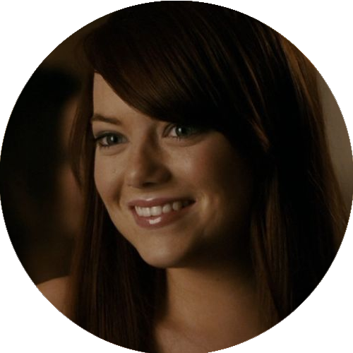
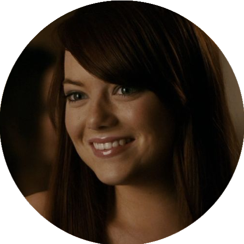

Superbad - É Hoje (2007)

Direção: Greg Mottola
Distribuição: Columbia Pictures
Lançamento:
 17 de agosto de 2007
17 de agosto de 2007
 19 de outubro de 2007
19 de outubro de 2007  ASSISTIR
ASSISTIR
Personagens


Direção: Greg Mottola
Distribuição: Columbia Pictures
Lançamento:
17 de agosto de 2007
19 de outubro de 2007 ASSISTIR
